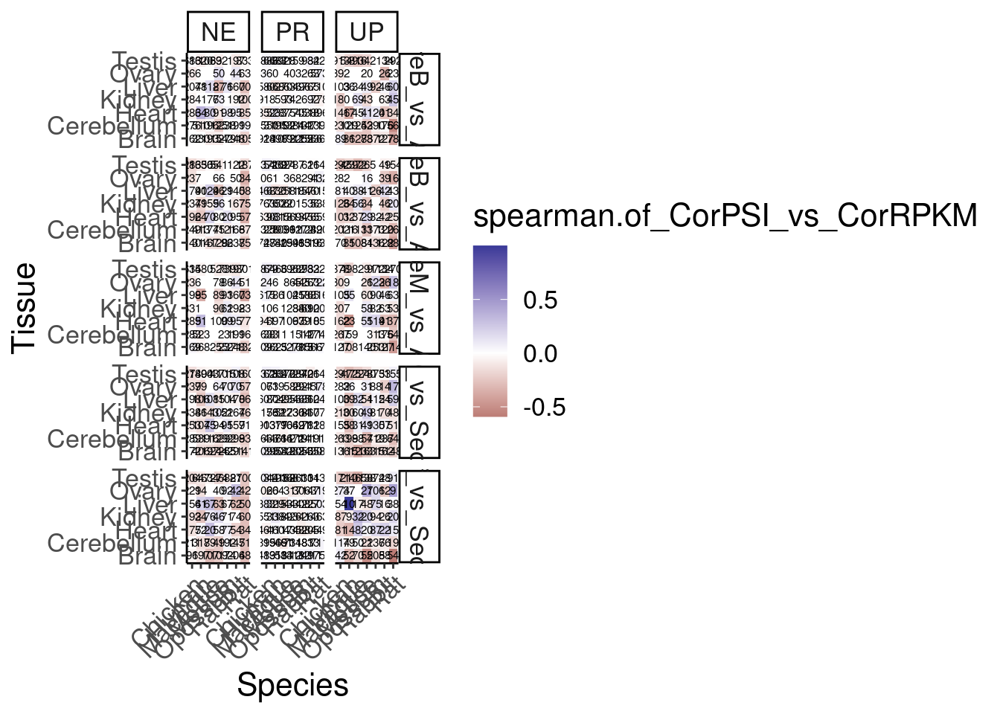
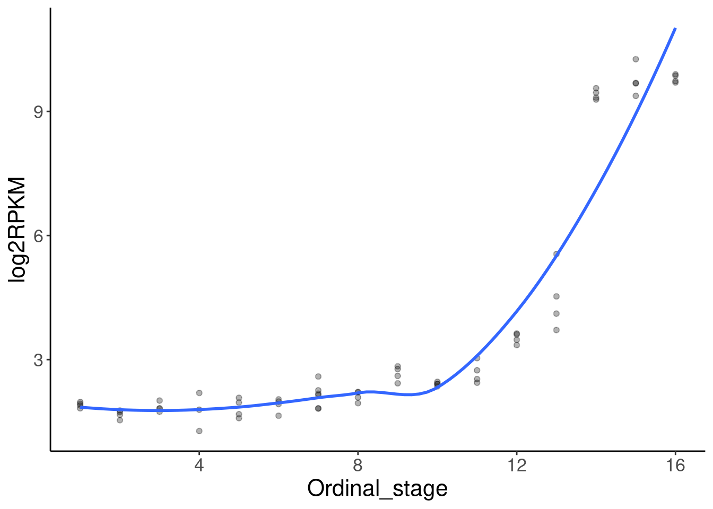
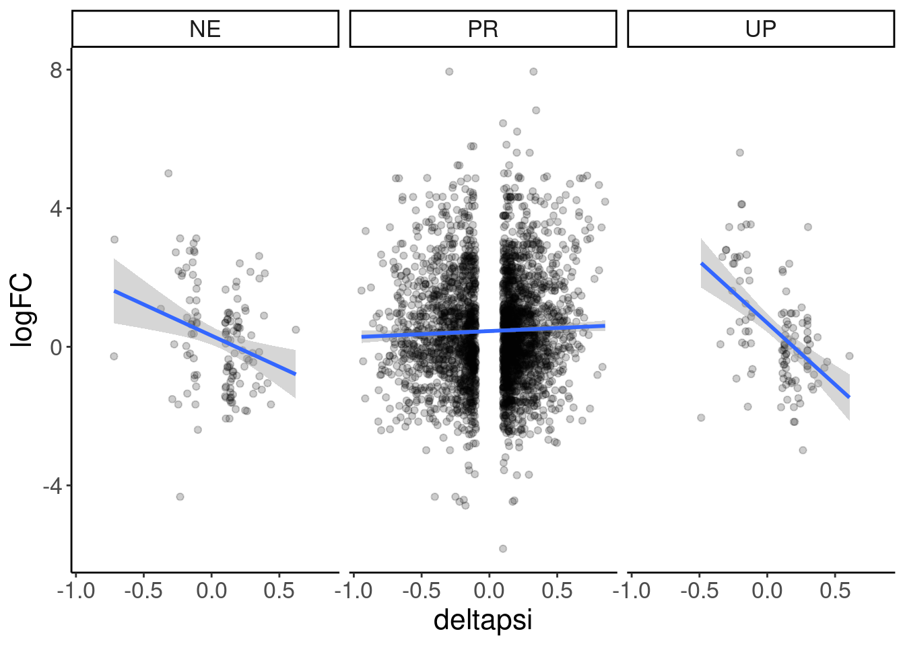
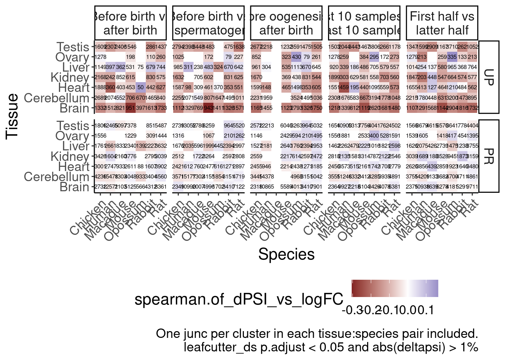
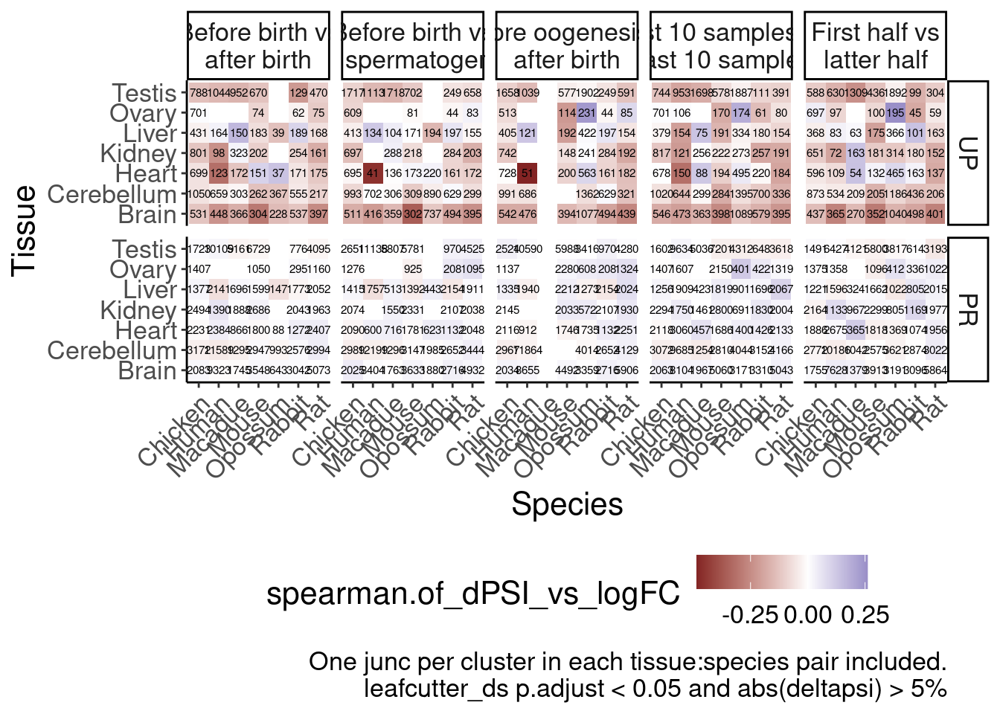
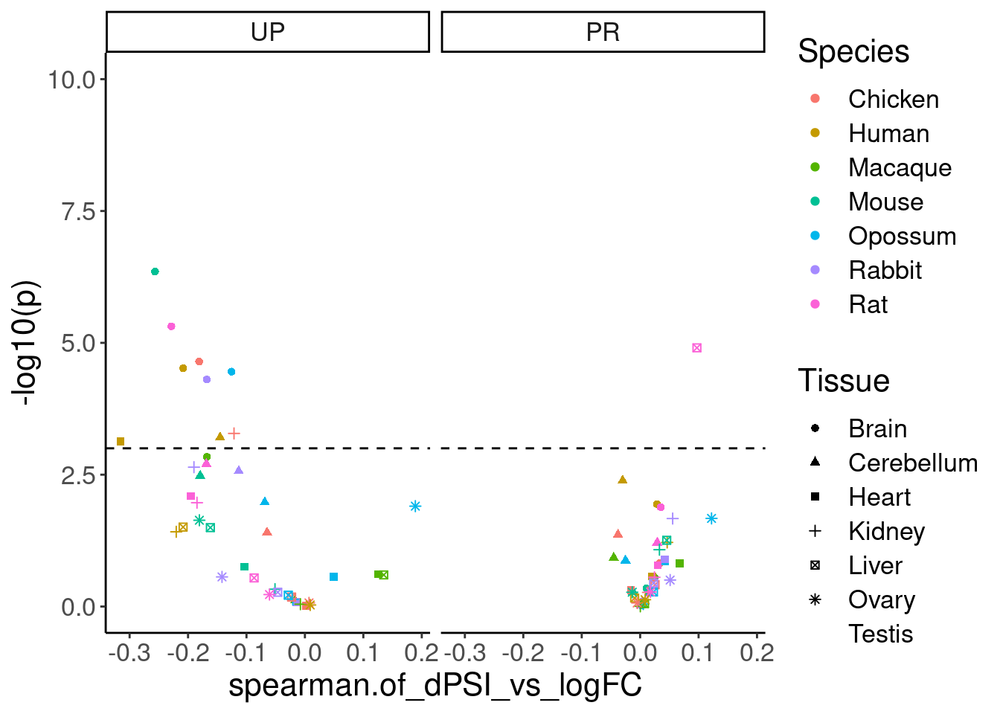
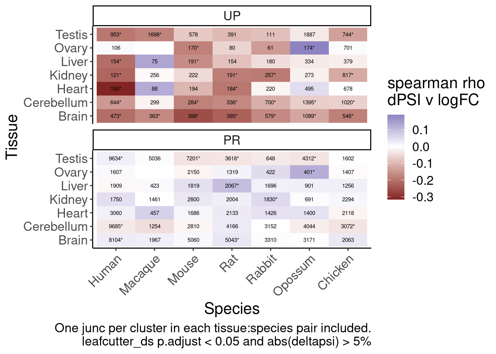
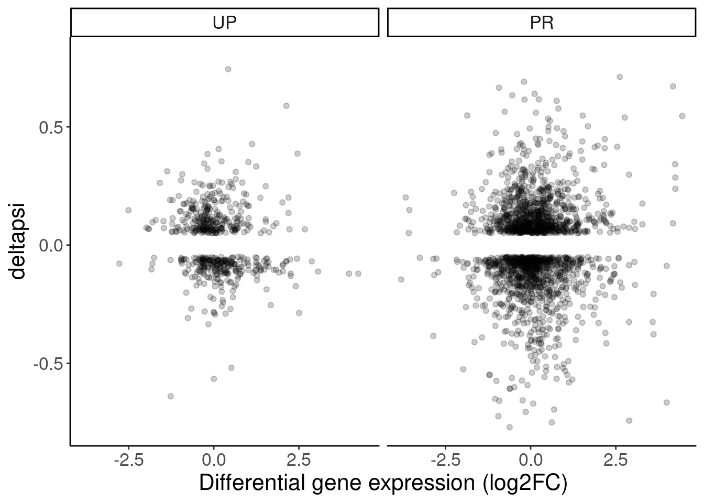

Last updated: 2024-10-16
Checks: 6 1
Knit directory:
2024_comparativesplicing/analysis/
This reproducible R Markdown analysis was created with workflowr (version 1.7.0). The Checks tab describes the reproducibility checks that were applied when the results were created. The Past versions tab lists the development history.
The R Markdown is untracked by Git. To know which version of the R
Markdown file created these results, you’ll want to first commit it to
the Git repo. If you’re still working on the analysis, you can ignore
this warning. When you’re finished, you can run
wflow_publish to commit the R Markdown file and build the
HTML.
Great job! The global environment was empty. Objects defined in the global environment can affect the analysis in your R Markdown file in unknown ways. For reproduciblity it’s best to always run the code in an empty environment.
The command set.seed(19900924) was run prior to running
the code in the R Markdown file. Setting a seed ensures that any results
that rely on randomness, e.g. subsampling or permutations, are
reproducible.
Great job! Recording the operating system, R version, and package versions is critical for reproducibility.
Nice! There were no cached chunks for this analysis, so you can be confident that you successfully produced the results during this run.
Great job! Using relative paths to the files within your workflowr project makes it easier to run your code on other machines.
Great! You are using Git for version control. Tracking code development and connecting the code version to the results is critical for reproducibility.
The results in this page were generated with repository version 172f74b. See the Past versions tab to see a history of the changes made to the R Markdown and HTML files.
Note that you need to be careful to ensure that all relevant files for
the analysis have been committed to Git prior to generating the results
(you can use wflow_publish or
wflow_git_commit). workflowr only checks the R Markdown
file, but you know if there are other scripts or data files that it
depends on. Below is the status of the Git repository when the results
were generated:
Ignored files:
Ignored: .DS_Store
Ignored: .Rhistory
Ignored: .Rproj.user/
Ignored: code/.DS_Store
Ignored: code/.RData
Ignored: code/.Rhistory
Ignored: code/.ipynb_checkpoints/
Ignored: code/.snakemake/
Ignored: code/ChainFiles/
Ignored: code/CordosoMoreira_Fastq/
Ignored: code/Downloads/
Ignored: code/GenomeFiles/
Ignored: code/LiftoverJuncs/
Ignored: code/Log.out
Ignored: code/MazinLeafcutterAnalysis/
Ignored: code/Rplots.pdf
Ignored: code/Session.vim
Ignored: code/config/OldConfigs/2040822_Cordoso_Moreira_SampleList.tsv
Ignored: code/conservation/
Ignored: code/featureCounts/
Ignored: code/kaessmanAnalysis/
Ignored: code/kaessman_AS_dat/
Ignored: code/logs/
Ignored: code/rna-seq/
Ignored: code/rules/.MazinLeafcutterAnalysis.smk.swp
Ignored: code/scratch/
Ignored: code/scripts/.ipynb_checkpoints/
Ignored: code/scripts/.vscode/
Ignored: code/snakemake.log
Ignored: data/.DS_Store
Untracked files:
Untracked: analysis/.ipynb_checkpoints/
Untracked: analysis/2024-08-21_SpearmanFromPSI_WithinSpecies.Rmd
Untracked: analysis/2024-08-21_SpearmanFromPSI_WithinSpecies_AllSpecies.Rmd
Untracked: analysis/2024-08-21_SpearmanFromPSI_WithinSpecies_SampleStagesFixed.Rmd
Untracked: analysis/2024-08-24_BioMartLookupGenes.Rmd
Untracked: analysis/2024-08-29_ExploreJuncLiftovers.Rmd
Untracked: analysis/2024-08-29_OrganizeCrossSpeciesTables.Rmd
Untracked: analysis/2024-09-06_UnrpdoctuviveSplicingAndExpression.Rmd
Untracked: analysis/2024-09-09_Organize_ConserveddevASJuncs.Rmd
Untracked: analysis/2024-09-10_RedoMazinJuncAnalysisFixedClassifications.Rmd
Untracked: analysis/2024-09-23_FixMouseEnsemblBed12ToGtf.Rmd
Untracked: analysis/2024-09-30_ContinousExpressionSplicingModel.Rmd
Untracked: analysis/2024-09-30_ContinousTimeSplicingModel.Rmd
Untracked: analysis/2024-10-03_ExplorePuzzling_UP_vs_Expression_Effects.Rmd
Untracked: analysis/2024-10-14_MakeLeafcutterContrasts.Rmd
Untracked: analysis/2024-10-15_HeatmapsWithLeafcutter_dPSI.Rmd
Untracked: analysis/20240815_LiftoverJuncsTest.ipynb
Untracked: analysis/Untitled.ipynb
Untracked: code/config/CordosoGenomes_Extra_Gtfs.tsv
Untracked: code/config/CordosoTimeSeriesContrasts.tsv
Untracked: code/config/GTEx_juncFileList.tsv
Untracked: code/envs/crossmap.yml
Untracked: code/envs/py27.yml
Untracked: code/rules/MazinLeafcutterAnalysis.smk
Untracked: code/scripts/FeatureCounts_to_Mat.R
Untracked: code/scripts/PrepAllJuncsFor_JunctionClassifier.R
Untracked: code/scripts/QQNorm_PSITable_ByTissue.R
Untracked: code/scripts/SpearmanCor_Mazin_LeafcutterPSI.R
Untracked: code/scripts/SpearmanCor_Mazin_log2RPKM.R
Untracked: code/scripts/Untitled.ipynb
Untracked: code/scripts/leafcutter_to_PSI_GTEX.R
Untracked: code/scripts/tidy_leafcutter_ds_results.R
Untracked: data/Stages_AsIn_CordosoMoreira.tsv
Untracked: data/Stages_AsIn_CordosoMoreira_Recoded.txt
Untracked: output/Conserved.devAS.leafcutter.tsv.gz
Untracked: output/Ensembl.GeneHumanHomologs.tsv.gz
Untracked: output/Ensembl.TranscriptInfo.tsv.gz
Untracked: output/GTEx_DS_DE_FromChao_CordosoTissuePairs.tsv.gz
Unstaged changes:
Modified: analysis/2024-07-16_Download_CordosoMoreira_Fastq.Rmd
Modified: analysis/index.Rmd
Modified: code/Snakefile
Modified: code/config/ChainFiles.tsv
Modified: code/config/Cordoso_Moreira_SampleList.tsv
Modified: code/config/STAR_Genome_List.tsv
Modified: code/config/samples.tsv
Modified: code/envs/bedparse.yml
Modified: code/module_workflows/snakemake-workflow_rna-seq
Modified: code/rules/LiftoverJuncs.smk
Modified: code/rules/common.smk
Modified: code/scripts/daiuc_leafcutter2
Modified: code/scripts/leafcutter2
Modified: output/QC/ReadCountsPerSamples.tsv
Staged changes:
Modified: .gitmodules
New: code/scripts/daiuc_leafcutter2
Note that any generated files, e.g. HTML, png, CSS, etc., are not included in this status report because it is ok for generated content to have uncommitted changes.
There are no past versions. Publish this analysis with
wflow_publish() to start tracking its development.
Haven’t been able to figure out why unproductive splicing as measured by spearman of leafcutter PSI doesn’t correlate negatively with spearman of host gene expression. Now, rather than using spearman correlation coefficients, I am measuring logFC and dPSI (from leafcutter) using contrasts from groups of samples at the beginning or end of the the species:tissue time course.
library(tidyverse)
library(data.table)
# Set theme
theme_set(
theme_classic() +
theme(text=element_text(size=16, family="Helvetica")))
# I use layer a lot, to rotate long x-axis labels
Rotate_x_labels <- theme(axis.text.x = element_text(angle = 45, vjust = 1, hjust=1))Now read in the data… I defined the groups for leafcutter and edgeR contrasts a couple different ways, as described in previous notebook.
CordosoSamples <- read_tsv("../code/config/Cordoso_Moreira_SampleList.tsv")
dat <- Sys.glob("../code/MazinLeafcutterAnalysis/Contrasts_ds_tidy/*joined.tsv.gz") %>%
setNames(str_replace(., "../code/MazinLeafcutterAnalysis/Contrasts_ds_tidy/(.+?).joined.tsv.gz", "\\1")) %>%
lapply(fread) %>%
bind_rows(.id="Contrast") %>%
separate(Contrast, into=c("Contrast", "Tissue", "Species"), sep="\\.") %>%
mutate(IntFlag = 1*UTR + 2*Coding + 4*Annot + 8*GencodePC) %>%
mutate(ProductivityLabel = case_when(
IntFlag %in% c(1,5) ~ "NE",
IntFlag %in% c(0,4) ~ "UP",
TRUE ~ "PR"
))
dat %>%
count(Contrast, Tissue, Species) Contrast Tissue Species n
1: BeforeB_vs_AferS Brain Chicken 84424
2: BeforeB_vs_AferS Brain Human 173105
3: BeforeB_vs_AferS Brain Macaque 112016
4: BeforeB_vs_AferS Brain Mouse 117412
5: BeforeB_vs_AferS Brain Opossum 73956
---
218: FirstHalf_vs_SecondHalf Testis Macaque 142102
219: FirstHalf_vs_SecondHalf Testis Mouse 129304
220: FirstHalf_vs_SecondHalf Testis Opossum 110314
221: FirstHalf_vs_SecondHalf Testis Rabbit 141994
222: FirstHalf_vs_SecondHalf Testis Rat 147598dat %>%
filter(p.adjust < 0.1) %>%
filter(abs(logef)>1) %>%
filter(abs(deltapsi) > 0.1) %>%
# count(Contrast, Tissue, Species)
group_by(Contrast, Tissue, Species, ProductivityLabel) %>%
summarise(spearman.of_CorPSI_vs_CorRPKM = cor(deltapsi, logFC, method='s', use="pairwise.complete.obs"), n=n()) %>%
ungroup() %>%
ggplot(aes(x=Species, y=Tissue, fill=spearman.of_CorPSI_vs_CorRPKM)) +
geom_tile() +
scale_fill_gradient2(midpoint=0) +
geom_text(aes(label=n), size=2) +
facet_grid(Contrast~ProductivityLabel) +
Rotate_x_labels
# ggsave("../code/scratch/HeatmapFromLeafcutterDpsi_and_log2FC.pdf", height=12, width=16)
dat %>%
count(Species, Contrast) Species Contrast n
1: Chicken BeforeB_vs_AferS 561476
2: Chicken BeforeB_vs_AfterB 625347
3: Chicken BeforeM_vs_AfterS 533933
4: Chicken First10_vs_Second10 571129
5: Chicken FirstHalf_vs_SecondHalf 653636
6: Human BeforeB_vs_AferS 719684
7: Human BeforeB_vs_AfterB 918954
8: Human BeforeM_vs_AfterS 671503
9: Human First10_vs_Second10 958734
10: Human FirstHalf_vs_SecondHalf 1252650
11: Macaque BeforeB_vs_AferS 620277
12: Macaque BeforeB_vs_AfterB 705032
13: Macaque First10_vs_Second10 636292
14: Macaque FirstHalf_vs_SecondHalf 724478
15: Mouse BeforeB_vs_AferS 753926
16: Mouse BeforeB_vs_AfterB 829980
17: Mouse BeforeM_vs_AfterS 471246
18: Mouse First10_vs_Second10 672340
19: Mouse FirstHalf_vs_SecondHalf 892190
20: Opossum BeforeB_vs_AferS 298451
21: Opossum BeforeB_vs_AfterB 384640
22: Opossum BeforeM_vs_AfterS 681044
23: Opossum First10_vs_Second10 652553
24: Opossum FirstHalf_vs_SecondHalf 744004
25: Rabbit BeforeB_vs_AferS 849876
26: Rabbit BeforeB_vs_AfterB 926683
27: Rabbit BeforeM_vs_AfterS 849876
28: Rabbit First10_vs_Second10 779293
29: Rabbit FirstHalf_vs_SecondHalf 1033056
30: Rat BeforeB_vs_AferS 884427
31: Rat BeforeB_vs_AfterB 981411
32: Rat BeforeM_vs_AfterS 782111
33: Rat First10_vs_Second10 738769
34: Rat FirstHalf_vs_SecondHalf 1020611
Species Contrast nLet’s look at specific cell at beta beta scatter.
First let’s verify I understand the signs of the logFC and deltapsi correctly… I believe it should be Late/Early (so that positive deltapsi means increase in PSI over time, and positive logFC means increase in expression over time)
dat %>%
filter(p.adjust < 0.1) %>%
filter(abs(logef)>1) %>%
filter(abs(deltapsi) > 0.1) %>%
filter(Contrast == "BeforeM_vs_AfterS" & Species == "Rat" & Tissue == "Brain") %>%
filter(FDR<0.001) %>%
arrange(desc(abs(logFC))) %>%
head() Contrast Tissue Species cluster start stop
1: BeforeM_vs_AfterS Brain Rat chrX:clu_65817_+ 100195281 100196341
2: BeforeM_vs_AfterS Brain Rat chrX:clu_65817_+ 100196509 100197119
3: BeforeM_vs_AfterS Brain Rat chr18:clu_29151_+ 54417539 54423551
4: BeforeM_vs_AfterS Brain Rat chr8:clu_59492_+ 90502371 90502804
5: BeforeM_vs_AfterS Brain Rat chr7:clu_54409_- 12012292 12013384
6: BeforeM_vs_AfterS Brain Rat chr15:clu_22718_+ 45151511 45152330
logef Early Late deltapsi Intron_coord status
1: 3.098595 7.825390e-03 0.3332104 0.3253850 chrX:100195281-100196340 Success
2: -1.050253 9.007364e-01 0.6053251 -0.2954114 chrX:100196509-100197118 Success
3: 1.387213 5.690950e-01 0.9136454 0.3445503 chr18:54417539-54423550 Success
4: 3.647285 3.841176e-01 0.4848078 0.1006902 chr8:90502371-90502803 Success
5: 9.131374 2.891287e-07 0.2043488 0.2043485 chr7:12012292-12013383 Success
6: 1.443385 4.314378e-03 0.1301252 0.1258108 chr15:45151511-45152329 Success
loglr df p p.adjust Gene_name Strand Annot Coding UTR
1: 53.67680 3 4.071925e-23 2.007720e-21 Plp1 + TRUE TRUE FALSE
2: 53.67680 3 4.071925e-23 2.007720e-21 Plp1 + TRUE TRUE FALSE
3: 51.98334 2 2.654144e-23 1.326867e-21 Camk2a + TRUE TRUE FALSE
4: 12.11374 2 5.483662e-06 4.556102e-05 Rasgrf1 + TRUE TRUE TRUE
5: 19.73551 2 2.685207e-09 3.619974e-08 Cyp4f1 - TRUE TRUE FALSE
6: 100.61250 4 2.048774e-42 3.968119e-40 Egr3 + TRUE TRUE FALSE
GencodePC logFC logCPM PValue FDR IntFlag
1: TRUE 7.942555 10.0330790 0.000000e+00 0.000000e+00 14
2: TRUE 7.942555 10.0330790 0.000000e+00 0.000000e+00 14
3: TRUE 6.825270 9.9117867 4.701417e-68 7.965701e-67 14
4: TRUE 6.452353 7.2140849 1.650059e-17 4.693253e-17 15
5: TRUE 6.211570 0.5229616 1.131230e-76 2.461529e-75 14
6: TRUE 5.832464 5.0623401 2.315607e-73 4.636306e-72 14
ProductivityLabel
1: PR
2: PR
3: PR
4: PR
5: PR
6: PRRPKM.rat <- fread("../code/MazinLeafcutterAnalysis/Expression/Rat_UCSC.rn7_RefSeqv108.log2rpkm.tsv.gz")
RPKM.rat %>%
filter(Geneid == "Plp1") %>%
pivot_longer(names_to = "ID", values_to = "log2RPKM", -Geneid) %>%
inner_join(
CordosoSamples %>%
filter(ID_Species == "Rat") %>%
filter(`Used library?` %in% c("Yes", "yes")) %>%
separate_rows(Tissue_ForDevelopementalAnalysis) %>%
filter(Tissue_ForDevelopementalAnalysis == "Brain")
) %>%
ggplot(aes(x=Ordinal_stage, y=log2RPKM)) +
geom_point(alpha=0.3) +
geom_smooth(method='loess', se=F)
Ok I understand the effect directions properly. Now let’s look at one of the scatters…
dat %>%
filter(p.adjust < 0.1) %>%
filter(abs(logef)>1) %>%
filter(abs(deltapsi) > 0.1) %>%
filter(Contrast == "BeforeM_vs_AfterS" & Species == "Rat" & Tissue == "Brain") %>%
ggplot(aes(x=deltapsi, y=logFC)) +
geom_point(alpha=0.2) +
geom_smooth(method='lm') +
facet_wrap(~ProductivityLabel)
Now let’s play with different thresholds for deltapsi and logef
dat$Contrast %>% unique[1] "BeforeB_vs_AferS" "BeforeB_vs_AfterB"
[3] "BeforeM_vs_AfterS" "First10_vs_Second10"
[5] "FirstHalf_vs_SecondHalf"dat %>%
filter(p.adjust < 0.05) %>%
# filter(abs(logef)>0.5) %>%
filter(abs(deltapsi) > 0.01) %>%
filter(!ProductivityLabel=="NE") %>%
group_by(Contrast, Species, Tissue, cluster) %>%
mutate(Contains_Noncoding = any(ProductivityLabel == "UP")) %>%
ungroup() %>%
mutate(ProductivityLabel = factor(ProductivityLabel, levels=c("UP", "PR"))) %>%
arrange(Contrast, Species, Tissue, cluster, Contains_Noncoding, ProductivityLabel, desc(abs(deltapsi))) %>%
distinct(Contrast, Species, Tissue, cluster, .keep_all=T) %>%
# count(Contrast, Tissue, Species)
group_by(Contrast, Tissue, Species, ProductivityLabel) %>%
summarise(spearman.of_dPSI_vs_logFC = cor(deltapsi, logFC, method='s', use="pairwise.complete.obs"), n=n()) %>%
ungroup() %>%
mutate(Contrast = recode(Contrast, "BeforeB_vs_AferS"="Before birth vs\nafter spermatogenesis", "BeforeB_vs_AfterB"="Before birth vs\nafter birth", "BeforeM_vs_AfterS"="Before oogenesis vs\nafter birth", "First10_vs_Second10"="First 10 samples vs\n last 10 samples", "FirstHalf_vs_SecondHalf"="First half vs\nlatter half")) %>%
ggplot(aes(x=Species, y=Tissue, fill=spearman.of_dPSI_vs_logFC)) +
geom_tile() +
scale_fill_gradient2(midpoint=0) +
geom_text(aes(label=n), size=2) +
facet_grid(ProductivityLabel~Contrast) +
Rotate_x_labels +
theme(legend.position='bottom') +
labs(caption = "One junc per cluster in each tissue:species pair included.\nleafcutter_ds p.adjust < 0.05 and abs(deltapsi) > 1%")
ggsave("../code/scratch/HeatmapFromLeafcutterDpsi_and_log2FC.pdf", height=8, width=14)
dat %>%
filter(p.adjust < 0.05) %>%
# filter(abs(logef)>0.5) %>%
filter(abs(deltapsi) > 0.05) %>%
filter(!ProductivityLabel=="NE") %>%
group_by(Contrast, Species, Tissue, cluster) %>%
mutate(Contains_Noncoding = any(ProductivityLabel == "UP")) %>%
ungroup() %>%
mutate(ProductivityLabel = factor(ProductivityLabel, levels=c("UP", "PR"))) %>%
arrange(Contrast, Species, Tissue, cluster, Contains_Noncoding, ProductivityLabel, desc(abs(deltapsi))) %>%
distinct(Contrast, Species, Tissue, cluster, .keep_all=T) %>%
# count(Contrast, Tissue, Species)
group_by(Contrast, Tissue, Species, ProductivityLabel) %>%
summarise(spearman.of_dPSI_vs_logFC = cor(deltapsi, logFC, method='s', use="pairwise.complete.obs"), n=n()) %>%
ungroup() %>%
mutate(Contrast = recode(Contrast, "BeforeB_vs_AferS"="Before birth vs\nafter spermatogenesis", "BeforeB_vs_AfterB"="Before birth vs\nafter birth", "BeforeM_vs_AfterS"="Before oogenesis vs\nafter birth", "First10_vs_Second10"="First 10 samples vs\n last 10 samples", "FirstHalf_vs_SecondHalf"="First half vs\nlatter half")) %>%
ggplot(aes(x=Species, y=Tissue, fill=spearman.of_dPSI_vs_logFC)) +
geom_tile() +
scale_fill_gradient2(midpoint=0) +
geom_text(aes(label=n), size=2) +
facet_grid(ProductivityLabel~Contrast) +
Rotate_x_labels +
theme(legend.position='bottom') +
labs(caption = "One junc per cluster in each tissue:species pair included.\nleafcutter_ds p.adjust < 0.05 and abs(deltapsi) > 5%")
ggsave("../code/scratch/HeatmapFromLeafcutterDpsi_and_log2FC.stricterfiltering.pdf", height=8, width=14)Also, let’s present more similar to Chao has:
dat %>%
filter(p.adjust < 0.05) %>%
# filter(abs(logef)>0.5) %>%
filter(abs(deltapsi) > 0.05) %>%
filter(!ProductivityLabel=="NE") %>%
group_by(Contrast, Species, Tissue, cluster) %>%
mutate(Contains_Noncoding = any(ProductivityLabel == "UP")) %>%
ungroup() %>%
mutate(ProductivityLabel = factor(ProductivityLabel, levels=c("UP", "PR"))) %>%
arrange(Contrast, Species, Tissue, cluster, Contains_Noncoding, ProductivityLabel, desc(abs(deltapsi))) %>%
distinct(Contrast, Species, Tissue, cluster, .keep_all=T) %>%
# count(Contrast, Tissue, Species)
group_by(Contrast, Tissue, Species, ProductivityLabel) %>%
summarise(spearman.of_dPSI_vs_logFC = cor(deltapsi, logFC, method='s', use="pairwise.complete.obs"), n=n(),
p = cor.test(deltapsi, logFC, method='s', use="pairwise.complete.obs")$p.value) %>%
ungroup() %>%
filter(Contrast == "First10_vs_Second10") %>%
ggplot(aes(x=spearman.of_dPSI_vs_logFC, y=-log10(p))) +
geom_point(aes(color=Species, shape=Tissue)) +
geom_hline(yintercept = 3, linetype='dashed') +
facet_wrap(~ProductivityLabel) +
coord_cartesian(ylim=c(0,10)) Ok, let’s start making some final looking plots…
Final.heatmap.dat <- dat %>%
filter(p.adjust < 0.05) %>%
# filter(abs(logef)>0.5) %>%
filter(abs(deltapsi) > 0.05) %>%
filter(!ProductivityLabel=="NE") %>%
filter(Contrast == "First10_vs_Second10") %>%
mutate(Contrast = recode(Contrast, "BeforeB_vs_AferS"="Before birth vs\nafter spermatogenesis", "BeforeB_vs_AfterB"="Before birth vs\nafter birth", "BeforeM_vs_AfterS"="Before oogenesis vs\nafter birth", "First10_vs_Second10"="First 10 samples vs\n last 10 samples", "FirstHalf_vs_SecondHalf"="First half vs\nlatter half")) %>%
group_by(Contrast, Species, Tissue, cluster) %>%
mutate(Contains_Noncoding = any(ProductivityLabel == "UP")) %>%
ungroup() %>%
mutate(ProductivityLabel = factor(ProductivityLabel, levels=c("UP", "PR"))) %>%
arrange(Contrast, Species, Tissue, cluster, Contains_Noncoding, ProductivityLabel, desc(abs(deltapsi))) %>%
distinct(Contrast, Species, Tissue, cluster, .keep_all=T)
Final.heatmap.dat %>%
group_by(Contrast, Tissue, Species, ProductivityLabel) %>%
summarise(spearman.of_dPSI_vs_logFC = cor(deltapsi, logFC, method='s', use="pairwise.complete.obs"), n=n(),
p = cor.test(deltapsi, logFC, method='s', use="pairwise.complete.obs")$p.value) %>%
ungroup() %>%
mutate(Plab = case_when(
p > 0.05 ~ "",
p < 0.05 ~ "*",
p < 0.005 ~ "**",
p < 0.0005 ~ "***"
)) %>%
mutate(label = paste0(n, Plab)) %>%
mutate(Species = factor(Species, levels=c("Human", "Macaque", "Mouse", "Rat", "Rabbit", "Opossum", "Chicken"))) %>%
ggplot(aes(x=Species, y=Tissue, fill=spearman.of_dPSI_vs_logFC)) +
geom_tile() +
scale_fill_gradient2(midpoint=0) +
geom_text(aes(label=label), size=2) +
facet_wrap(~ProductivityLabel, nrow=2) +
Rotate_x_labels +
theme() +
labs(caption = "One junc per cluster in each tissue:species pair included.\nleafcutter_ds p.adjust < 0.05 and abs(deltapsi) > 5%", fill="spearman rho\ndPSI v logFC")
Final.heatmap.dat %>%
group_by(Contrast, Tissue, Species, ProductivityLabel) %>%
summarise(spearman.of_dPSI_vs_logFC = cor(deltapsi, logFC, method='s', use="pairwise.complete.obs"), n=n(),
p = cor.test(deltapsi, logFC, method='s', use="pairwise.complete.obs")$p.value) %>%
ungroup() %>%
mutate(Plab = case_when(
p > 0.05 ~ "",
p < 0.05 ~ "*",
p < 0.005 ~ "**",
p < 0.0005 ~ "***"
)) %>%
mutate(label = paste0(n, Plab)) %>%
mutate(Species = factor(Species, levels=c("Human", "Macaque", "Mouse", "Rat", "Rabbit", "Opossum", "Chicken"))) %>%
ggplot(aes(x=Species, y=Tissue, fill=spearman.of_dPSI_vs_logFC)) +
geom_tile() +
scale_fill_gradient2(midpoint=0) +
geom_text(aes(label=n), size=2) +
facet_wrap(~ProductivityLabel, nrow=2) +
Rotate_x_labels +
theme() +
labs(caption = "One junc per cluster in each tissue:species pair included.\nleafcutter_ds p.adjust < 0.05 and abs(deltapsi) > 5%", fill="spearman rho\ndPSI v logFC")Final.heatmap.dat %>%
filter(Species == "Chicken" & Tissue == "Brain") %>%
ggplot(aes(y=deltapsi, x=logFC)) +
geom_point(alpha=0.2) +
facet_wrap(~ProductivityLabel) +
labs(x="Differential gene expression (log2FC)")
Final.heatmap.dat %>%
filter(Species == "Chicken" & Tissue == "Brain") %>%
ggplot(aes(y=deltapsi, x=logFC)) +
geom_point(alpha=0.2) +
facet_wrap(~ProductivityLabel) +
labs(x="Differential gene expression (log2FC)")ggsave("../code/scratch/HeatmapFromLeafcutterDpsi_and_log2FC.stricterfiltering.pdf", height=8, width=14)
sessionInfo()R version 4.2.0 (2022-04-22)
Platform: x86_64-pc-linux-gnu (64-bit)
Running under: CentOS Linux 7 (Core)
Matrix products: default
BLAS/LAPACK: /software/openblas-0.3.13-el7-x86_64/lib/libopenblas_haswellp-r0.3.13.so
locale:
[1] LC_CTYPE=en_US.UTF-8 LC_NUMERIC=C LC_TIME=C
[4] LC_COLLATE=C LC_MONETARY=C LC_MESSAGES=C
[7] LC_PAPER=C LC_NAME=C LC_ADDRESS=C
[10] LC_TELEPHONE=C LC_MEASUREMENT=C LC_IDENTIFICATION=C
attached base packages:
[1] stats graphics grDevices utils datasets methods base
other attached packages:
[1] data.table_1.14.2 forcats_0.5.1 stringr_1.4.0 dplyr_1.0.9
[5] purrr_0.3.4 readr_2.1.2 tidyr_1.2.0 tibble_3.1.7
[9] ggplot2_3.3.6 tidyverse_1.3.1
loaded via a namespace (and not attached):
[1] httr_1.4.3 sass_0.4.1 bit64_4.0.5 vroom_1.5.7
[5] jsonlite_1.8.0 splines_4.2.0 R.utils_2.11.0 modelr_0.1.8
[9] bslib_0.3.1 assertthat_0.2.1 highr_0.9 cellranger_1.1.0
[13] yaml_2.3.5 lattice_0.20-45 pillar_1.7.0 backports_1.4.1
[17] glue_1.6.2 digest_0.6.29 promises_1.2.0.1 rvest_1.0.2
[21] colorspace_2.0-3 Matrix_1.5-3 htmltools_0.5.2 httpuv_1.6.5
[25] R.oo_1.24.0 pkgconfig_2.0.3 broom_0.8.0 haven_2.5.0
[29] scales_1.3.0 later_1.3.0 tzdb_0.3.0 git2r_0.30.1
[33] mgcv_1.8-40 generics_0.1.2 farver_2.1.0 ellipsis_0.3.2
[37] withr_2.5.0 cli_3.6.2 magrittr_2.0.3 crayon_1.5.1
[41] readxl_1.4.0 evaluate_0.15 R.methodsS3_1.8.1 fs_1.5.2
[45] fansi_1.0.3 nlme_3.1-157 xml2_1.3.3 textshaping_0.3.6
[49] tools_4.2.0 hms_1.1.1 lifecycle_1.0.1 munsell_0.5.0
[53] reprex_2.0.1 compiler_4.2.0 jquerylib_0.1.4 systemfonts_1.0.4
[57] rlang_1.0.2 grid_4.2.0 rstudioapi_0.13 labeling_0.4.2
[61] rmarkdown_2.14 gtable_0.3.0 DBI_1.1.2 R6_2.5.1
[65] lubridate_1.8.0 knitr_1.39 fastmap_1.1.0 bit_4.0.4
[69] utf8_1.2.2 workflowr_1.7.0 rprojroot_2.0.3 ragg_1.2.5
[73] stringi_1.7.6 parallel_4.2.0 Rcpp_1.0.12 vctrs_0.4.1
[77] dbplyr_2.1.1 tidyselect_1.1.2 xfun_0.30